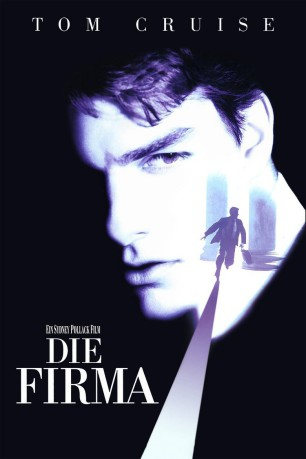

#845 Die Firma
Alternativ: The Firm
Auszeichnungen: für 2 Oscars nominiert
 
 IMDB-Wertung: 6.8 / 10
IMDB-Wertung: 6.8 / 10  Metascore: 58
Metascore: 58 
Der junge Anwalt Mitch McDeere nimmt eine gutdotierte Stellung bei einer Anwaltsfirma in Memphis an. Er kann nicht ahnen, daß die Firma eine Geldwaschanlage für die Mafia ist. Als Mitch von einem FBI-Agenten aufgeklärt wird, findet er sich in der Zwickmühle: Entweder beschafft er Beweise gegen seinen Arbeitgeber und begibt sich damit in Lebensgefahr, oder er wird zusammen mit den verbrecherischen Kollegen verknackt. Gemeinsam mit seiner Frau Abby und einer findigen Detektivsekretärin sinnt Mitch auf einen Ausweg.
Jahr: 1993
Dauer: 154 Minuten
FSK: 12
Land: USA Studio: Paramount PicturesTonspuren: DD2.0 - ,
Untertitel: Deutsch,
Auflösung: 1080p (1920x1080) Größe: 13107 MB
Genre: Drama, Mystery, Thriller
Regisseur:  Sydney Pollack
Sydney Pollack
Drehbuch: John Grisham, David Rabe, Robert Towne, David Rayfiel
Soundtrack: Dave Grusin
Darsteller:
 Tom Cruise als Mitch McDeere
Tom Cruise als Mitch McDeere Jeanne Tripplehorn als Abby McDeere
Jeanne Tripplehorn als Abby McDeere Gene Hackman als Avery Tolar
Gene Hackman als Avery Tolar Hal Holbrook als Oliver Lambert
Hal Holbrook als Oliver Lambert Terry Kinney als Lamar Quinn
Terry Kinney als Lamar Quinn Wilford Brimley als William Devasher
Wilford Brimley als William Devasher Ed Harris als Wayne Tarrance
Ed Harris als Wayne Tarrance Holly Hunter als Tammy Hemphill
Holly Hunter als Tammy Hemphill David Strathairn als Ray McDeere
David Strathairn als Ray McDeere Gary Busey als Eddie Lomax
Gary Busey als Eddie Lomax Steven Hill als F. Denton Voyles
Steven Hill als F. Denton Voyles Tobin Bell als The Nordic Man
Tobin Bell als The Nordic Man Barbara Garrick als Kay Quinn
Barbara Garrick als Kay Quinn Jerry Hardin als Royce McKnight
Jerry Hardin als Royce McKnight Paul Calderon als Thomas Richie
Paul Calderon als Thomas Richie Jerry Weintraub als Sonny Capps
Jerry Weintraub als Sonny Capps- Karina Lombard als Young Woman on Beach
 Margo Martindale als Nina Huff
Margo Martindale als Nina Huff Dean Norris als The Squat Man
Dean Norris als The Squat Man Tommy Cresswell als Wally Hudson
Tommy Cresswell als Wally Hudson- Jerry Chipman als FBI Agent
 Afemo Omilami als Cotton Truck Driver
Afemo Omilami als Cotton Truck Driver Clint Smith als Cotton Truck Driver
Clint Smith als Cotton Truck Driver- Jonathan Kaplan als Lawyer Recruiter
- Ted Kraus als Son of Attorney , uncredited
- Yvonne Sayers als Young girl , uncredited
 Ron Clinton Smith als Cotton Truck Driver #1 , uncredited
Ron Clinton Smith als Cotton Truck Driver #1 , uncredited Paul Sorvino als Tommie Morolto , uncredited
Paul Sorvino als Tommie Morolto , uncredited Joe Viterelli als Joey Morolto , uncredited
Joe Viterelli als Joey Morolto , uncredited- Sullivan Walker als Barry Abanks
- John Beal als Nathan Locke
- Lou Walker als Frank Mulholland
- Debbie Turner als Rental Agent
- David A. Kimball als Randall Dunbar
- Don Jones als Attorney
- Michael Allen als Attorney
- Levi Frazier Jr. als Restaurant Waiter
- Brian Casey als Telephone Installer
- William J. Parham als Minister
- Victor Nelson als Cafe Waiter
- Richard Ranta als Congressman Billings
- Janie Paris als Madge
- Frank Crawford als Judge
- Bart Whiteman als Dutch
 David Dwyer als Prison Guard
David Dwyer als Prison Guard- Mark W. Johnson als FBI Agent
- Jimmy Lackie als Technician
- Susan Elliott als River Museum Guide
- Erin Branham als River Museum Guide
- Ed Connelly als Pilot
Datei: X:\1993\Firma, Die (1993, FSK12, 1920x1080).mkv seit 31.03.2015
Festplatte: HD 1992-1995
 Es gibt insgesamt 68 Filme in der Gruppe '1993'
Es gibt insgesamt 68 Filme in der Gruppe '1993'